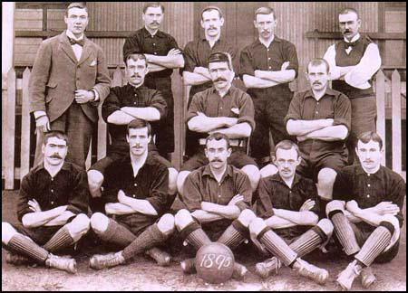

Arsenal FC: A Legacy of Passion and Success
Founded in 1886 as Dial Square, Arsenal Football Club has grown from humble beginnings to become one of the most successful and celebrated clubs in English football. Originally based in Woolwich, South London, the club moved to North London in 1913, establishing itself at the iconic Highbury Stadium.
Arsenal became a powerhouse under the legendary manager Herbert Chapman in the 1930s, revolutionizing English football with innovative tactics and securing multiple league titles. The club continued to thrive, earning its reputation as a dominant force in domestic competitions.
The Arsène Wenger era (1996–2018) transformed Arsenal's identity, bringing a modern, attacking style of play and winning numerous trophies, including the historic 2003–04 Invincibles season, where Arsenal remained unbeaten throughout the Premier League campaign.
Now playing at the Emirates Stadium, Arsenal remains a global football giant, celebrated for its commitment to attractive football, youth development, and a rich legacy of triumph and resilience.
Arsenal's Unbeaten Legacy and European Heartbreak
One of the most iconic achievements in English football history is Arsenal's legendary Invincibles season of 2003–04. Under the guidance of Arsène Wenger, the Gunners completed an entire Premier League season unbeaten (26 wins, 12 draws), a remarkable feat that remains unmatched in the modern era.
Despite domestic dominance, Arsenal's quest for European glory saw heartbreak in 2006 when they reached the UEFA Champions League Final. Facing Barcelona in Paris, the Gunners took the lead through Sol Campbell, but ultimately fell short as the Catalan giants secured a 2-1 victory, leaving Arsenal just short of their first European Cup.
Arsenal vs Barcelona Highlights
Despite the disappointment, Arsenal's legacy in European competitions remains strong, with a history of memorable matches and a passionate fanbase that continues to support the team in their pursuit of continental success.
Arsenal FC - Comprehensive Honours
Arsenal Football Club is one of England's most successful clubs, boasting a rich history of triumphs in both domestic and
European competitions. Below is a complete list of every major trophy the club has won.
| Competition | Titles Won | Last Win |
|---|---|---|
| Premier League / First Division | 13 | 2004 |
| FA Cup | 14 | 2020 |
| League Cup (EFL Cup) | 2 | 1993 |
| Community Shield | 17 | 2023 |
| European Cup Winners' Cup | 1 | 1994 |
| Inter-Cities Fairs Cup | 1 | 1970 |
| London Challenge Cup | 11 | 1931 |
| Sheriff of London Charity Shield | 1 | 1904 |
| Football League South (War-time) | 2 | 1943 |